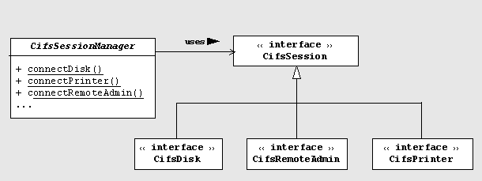
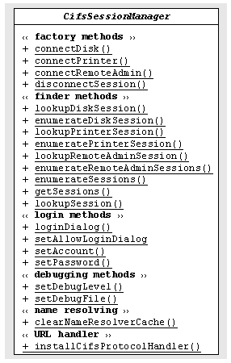
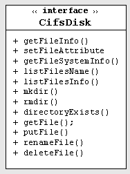
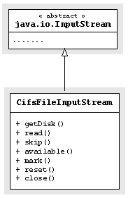
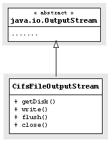
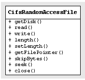
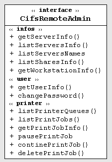
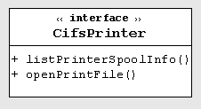

JCIFS Tutorial
1999.8.10
| Table of Contents |
The scope of this is limited to describing the use of the JCIFS client API. A detailed description of the interfaces and the classes can be looked up in the javadoc documentation.
Before one can work with a CIFS file system, printer or administration interface, a connection to the server must be made.
The CifsSession interface provides the connection operations required for each of these services (file, printer and administration). The serveices themselves are provided by the CifsDisk, CifsPrinter and CifsRemoteAdmin interfaces.

Every session has a user-defined local name. With the name, the session object can be determined any time.
|  | The
administration of the connections (sessions) is the task
of the class CifsSessionManager: The abstract class CifsSessionManager offers:
|
Every shared resource has a so-called "share name". The JCIFS client API supports two formats for the share names:
UNC-Syntax: \\server\share
URL-Syntax: cifs://server/share
where server identifies the computer (NetBIOS name) and share represents the resource, typically a disk fileshare or printer.
If an user name and a password is required to access the resource, you must instantiate a CifsLogin object:
CifsLogin login = new CifsLogin("account","password");
|  | Now you must open a
connection to the resource, in thi case a disk:CifsDisk disk ; disk = CifsSessionManager.connectDisk("sessionname", "\\\\pgtd2277\\tmp",login); The string sessionname is the logical name of the connection. This name can be used every time to lookup the corresponding CifsDisk object: disk = CifsSessionManager.lookupDiskSession("sessionname");
The interface CifsDisk offers methods to delete, rename files, create directories, etc.. |
|    |
The
class CifsFileInputStream can be
used where the class java.io.InputStream is expected. There are three ways to open an CifsFileInputStream : 1.) Using the disk object:
CifsDisk disk;
// ....open the connection
// open file for read
CifsFileInputStream in = new CifsFileInputStream(disk,
"myfilename.txt");
2.) Using the session name:
CifsFileInputStream in = new CifsFileInputStream("sessionname",
"myfilename.txt");
3.) Using a CifsFile object: CifsFile cfile = new CifsFile(disk,"myfilename.txt"); CifsFileInputStream in = new CifsFileInputStream(cfile); The same also applies to the class CifsFileOutputStream. The CifsRandomAccessFile class allows reading and writing data from and to any specified location in a file. This class does not use any buffers, all read and write operations are performed remote. Examples: // Opens file for reading:
CifsRandomAccessFile raccess = new CifsRandomAccessFile(disk,
"myfile","r");
// Opens file for reading and writing:
CifsRandomAccessFile waccess = new CifsRandomAccessFile(disk,
"myfile","rw");
|
|  | The
RemoteAdmin service provides methods:
Before one can request the information, a connection must be built up: CifsRemoteAdmin admin; admin = CifsSessionManager.connectRemoteAdmin("sessionname", "pgtd1234",login); The main difference from the Disk session is that the method connectRemoteAdmin expects only the NetBIOS name of the server. |
|  | The Printer
session provides a simple printer interface. For example: CifsPrinter printer; printer = CifsSessionManager.connectPrinter("sessionname", "\\\\pgtd2277\\hp",login); |
There are two possibilities to close a session:
// if you have the session reference
session.disconnect();
or
// if you have the session name
CifsSessionManager.disconnectSession("sessionname");
The CIFS protocol provides two authentication methods: a share level and an user level authentication. A short quotation from the CIFS specification:
The normal case for NT, Windows 95/98 and Samba 2.x is user level security. Share level security is obsolescent.
If the resource is protected at user level, you must specify the user name and the password:
CifsLogin login = new CifsLogin("account","password");
If the user name of the local process shall be used, you can omit the user name:
CifsLogin login = new CifsLogin("password");
The authentication data can be set also globally:
CifsSessionManager.setAccount("account");
CifsSessionManager.setPassword("password");
disk = CifsSessionManager.connectDisk("sessionname","\\\\pgtd2277\\tmp");
The autenthication data can be also entered in a dialog box:
boolean cancelled = CifsSessionManager.loginDialog(frame);
If the password is missing at the time of the opening the session, JCIFS tries first without password.
If this fails, a dialog box can optionally be opened for you to enter the autentication data. To allow this dialog, the following flag must be set:
CifsSessionManager.setAllowLoginDialog(true);
You don't have to be afraid, if the server supports encryption, the password is sent encrypted.
There are five name resolution mechanism in JCIFS: cache, LMHOST file, DNS , WINS (Windows Internet Name Service) and system properties:
By default, the resolved names are held in a cache. This behaviour can be turned off by setting the system property org.gnu.jcifs.resolve.cache=false.
The system property org.gnu.jcifs.resolve.order defines the order of the name resolution mechanism. For example:
org.gnu.jcifs.resolve.order=dns,lmhosts,props,wins
The default order is:
To enable the WINS name resolution, the system property org.gnu.jcifs.resolve.wins.server must be specified.
The LMHOST file has the same syntax as lmhosts files on Windows. The instructions #INCLUDE, #BEGIN_ALTERNATE are ignored.
# Comments and directives ip-address netbiosname #comment/directive ip-address netbiosname ....
For example:
# My LMHOST file 139.25.11.22 JAVAHOST #Java Repository ....
The LMHOST file can be either a local or a remote file:
org.gnu.jcifs.resolve.lmhosts=mylmhost.cfg
org.gnu.jcifs.resolve.lmhosts=http://server/config/mylmhost.cfg
The url protocol handler allow access to files by URL instead of UNC-name.
There are two possibilites to install the URL protocol handler :
1.) by the call
URL.setURLStreamHandlerFactory(new CifsURLStreamHandlerFactory ());
2.) or by the call:
CifsSessionManager.installCifsProtocolHandler();
The disadvantage of the first variant is that only one handler can be installed. The second variant changes the system property java.protocol.handler.pkgs to install the handler.
The protocol handler supports the following URL syntax:
cifs://[user[:password]@]host/share/path
A short example:
CifsSessionManager.installCifsProtocolHandler();
URL url = new URL("cifs://user@myhost/share/myfile.txt");
URLConnection con = url.openConnection();
InputStream in = con.getInputStream();
// read input stream
......
Most methods can throw an IOException exception. However, the actual exception can be CifsIOException. If the error is reported by the server, you can get the SMB error class and error code:
try {
...
} catch(IOException e) {
if (e instanceof CifsIOException) {
CifsIOException ex = (CifsIOException)e;
if (ex.isSMBError()) {
int errorclass = ex.getErrorClass();
int errorcode = ex.getErrorCode();
}
}
}
The method getErrorClass() returns the error class (ERROR_DOS,ERROR_SRV,ERROR_HW,ERROR_CMD) and the method getErrorCode() returns the error code ( DOS_*, SRV_*, HW_*).
The error messages are localized (german and english).
JCIFS evaluates the following system properties:
| Property name | Meaning |
| org.gnu.jcifs.resolve.name.netbios=ip-addr|dns-name | Maps a NetBIOS name to a
DNS name or IP address. For example: The server has the NetBIOS name mypc and the DNS name pgtd1111: org.gnu.jcifs.resolve.name.mypc=pgtd1111 |
| org.gnu.jcifs.resolve.lmhosts=lmhosts_url | Specifies the URL of the LMHOST file |
| org.gnu.jcifs.resolve.order=props,wins,lmhosts,dns | Defines the NetBIOS name
resolution order: props: system property org.gnu.jcifs.resolve.name lmhosts: LMHOST file dns: DNS server wins: WINS server |
| org.gnu.jcifs.resolve.cache=true|false | Specifies if the name
cache is used or not Default: true. |
| org.gnu.jcifs.resolve.wins.server=ip-addr | Specifes the address of the WINS server |
| org.gnu.jcifs.socket.timeout=timeout_in_sec | Socket timeout Default: 30 seconds |
| org.gnu.jcifs.socket.tcpnodelay=true|false | Socket option TcpNoDelay
(Nagle-Algorithmus). Default: true |
| org.gnu.jcifs.io.bufsize=size_in_bytes | Specifies the size of the
read/write buffer Default: 8196 bytes |
| org.gnu.jcifs.netbios.callingname=name | Specifies the NetBIOS
name of the caller Default: DNS name without the domain suffix |
The method CifsServiceManager.setDebugLevel(level) sets the debug level. The debug option has an effect only if the flag debugOn is set in the class org.gnu.jcifs.util.Debug.
The following debug levels can be specified:
| Level | Meaning |
| 1 | ERROR Only errors are logged |
| 2 | WARNING The warnings are also logged |
| 3 | INFO Additional informations (steps, methods) |
| 4 | BUFFER The SMB - Messages are also logged. Caution at this level: large amounts of data can result |
The debug messages are logged to System.err. The method CifsServiceManager.setDebugFile(file) specifies a file for the output.
You'll find example code in the source org.gnu.jcifs.shell.Main.java.
Copyright (©) 1999 Norbert Hranitzky